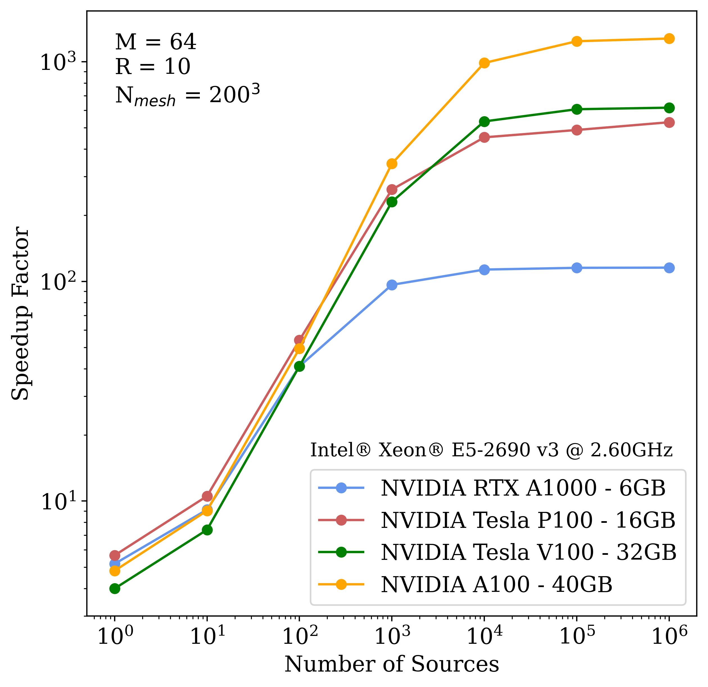

The pyC2Ray code
A flexible and GPU-accelerated Radiative Transfer Framework for Simulating the Cosmic Epoch of Reionization
Detailed modeling of the evolution of neutral hydrogen in the intergalactic medium during the Epoch of Reionization, 5 ≤ z ≤ 20, is critical in interpreting the cosmological signals from current and upcoming 21-cm experiments such as the Low-Frequency Array (LOFAR) and the Square Kilometre Array (SKA).

Numerical radiative transfer codes provide the most physically accurate models of the reionization process. However, they are computationally expensive as they must encompass enormous cosmological volumes and high mass resolution (< 108 M☉), while accurately capturing astrophysical processes occurring at small scales (≲ Mpc). Here, we present pyC2 Ray, an updated version of the massively parallel ray-tracing and chemistry code, C2Ray, which has been extensively employed in reionization simulations. The most time-consuming part of the code is calculating the hydrogen column density along the path of the ionizing photons. Here, we present the Accelerated Short-characteristics Octahedral RAy-tracing (ASORA) method, a ray-tracing algorithm specifically designed to run on graphical processing units (GPUs).
We include a modern Python interface, allowing easy and customized use of the code without compromising computational efficiency. We test pyC2Ray on a series of standard ray-tracing tests and a complete cosmological simulation with volume size (349 cMpc)3, mesh size of 2503 and approximately 106 sources. Compared to the original code, pyC2Ray achieves the same results with negligible fractional differences, 10-5, and a speedup factor of two orders of magnitude. Benchmark analysis shows that ASORA takes a few nanoseconds per source per voxel and scales linearly for an increasing number of sources and voxels within the ray-tracing radii. More recent result on local measurement of local cosmology Riess et al. (2019) are in disagreement with value inferred from CMB experiment Planck ollaboration (2018), raising the tension beyond a plausible level of odds. The inferred initial condition increases of a few order of magnitude the Halos distribution for masses above 109 M☉ at high redshift Watson (2013).
These halos host star-forming galaxies that are unaffected by the radiative feedback, and therefore are the main driver of the cosmic reaionization. Any alteration of their number density is expected to modify ionizing photon budget required by the hosted sources to complete reionization.
The aim of this project is to have an additional probe to help solve the current Hubble tension. To do so, I am planning to run a series of N-body simulations, performed with the CUBEP3M code Harnois-Deraps et al. (2013), and post-process with Grizzly, one dimensional RT code, in order to reproduce large scale observable, detectable by upcoming EoR experiment.
{kind=link}
Numerical radiative transfer codes provide the most physically accurate models of the reionization process. However, they are computationally expensive as they must encompass enormous cosmological volumes and high mass resolution (< 108 M☉), while accurately capturing astrophysical processes occurring at small scales (≲ Mpc). Here, we present pyC2 Ray, an updated version of the massively parallel ray-tracing and chemistry code, C2Ray, which has been extensively employed in reionization simulations. The most time-consuming part of the code is calculating the hydrogen column density along the path of the ionizing photons. Here, we present the Accelerated Short-characteristics Octahedral RAy-tracing (ASORA) method, a ray-tracing algorithm specifically designed to run on graphical processing units (GPUs).
We include a modern Python interface, allowing easy and customized use of the code without compromising computational efficiency. We test pyC2Ray on a series of standard ray-tracing tests and a complete cosmological simulation with volume size (349 cMpc)3, mesh size of 2503 and approximately 106 sources. Compared to the original code, pyC2Ray achieves the same results with negligible fractional differences, 10-5, and a speedup factor of two orders of magnitude. Benchmark analysis shows that ASORA takes a few nanoseconds per source per voxel and scales linearly for an increasing number of sources and voxels within the ray-tracing radii. More recent result on local measurement of local cosmology Riess et al. (2019) are in disagreement with value inferred from CMB experiment Planck ollaboration (2018), raising the tension beyond a plausible level of odds. The inferred initial condition increases of a few order of magnitude the Halos distribution for masses above 109 M☉ at high redshift Watson (2013).
These halos host star-forming galaxies that are unaffected by the radiative feedback, and therefore are the main driver of the cosmic reaionization. Any alteration of their number density is expected to modify ionizing photon budget required by the hosted sources to complete reionization.
The aim of this project is to have an additional probe to help solve the current Hubble tension. To do so, I am planning to run a series of N-body simulations, performed with the CUBEP3M code Harnois-Deraps et al. (2013), and post-process with Grizzly, one dimensional RT code, in order to reproduce large scale observable, detectable by upcoming EoR experiment.